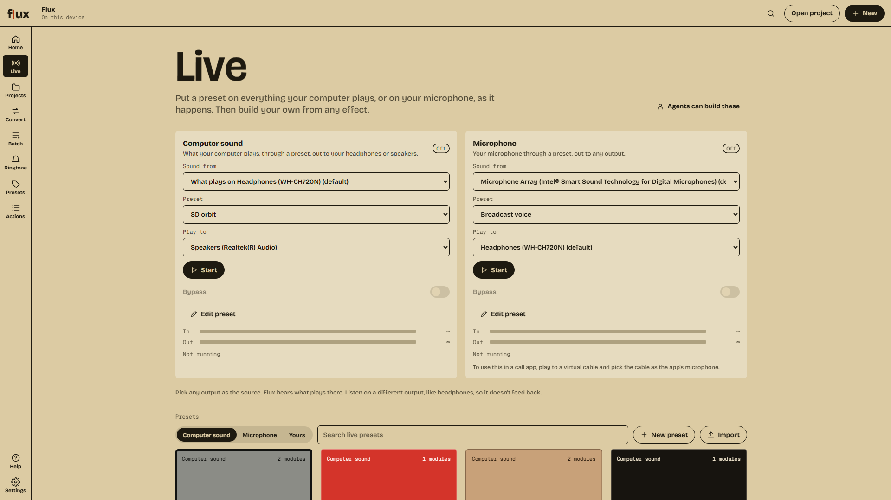
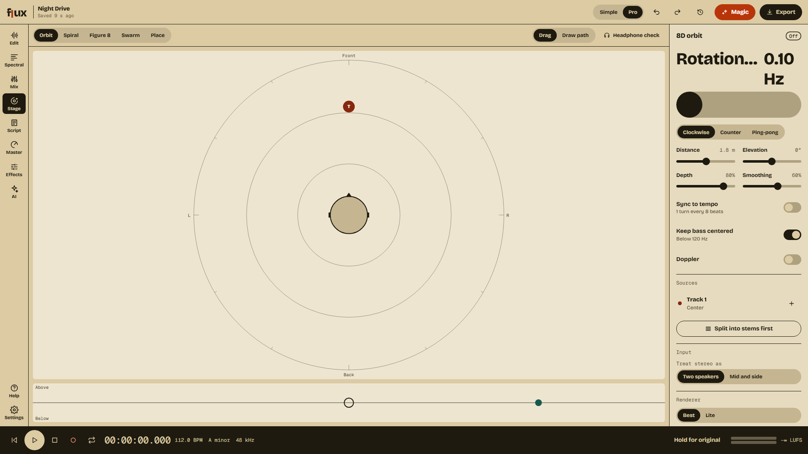

Your music.
Your calls.
Your mic.
Live,
in
8D.
f
ux
Non-destructive · 32-bit float · on your computer
Live.
41 built-in presets · or build your own


T
Clone your voice.
Only with their recorded consent.
Made on your computer.
0
tools for your agent.
agent → flux-mcp
f
ux